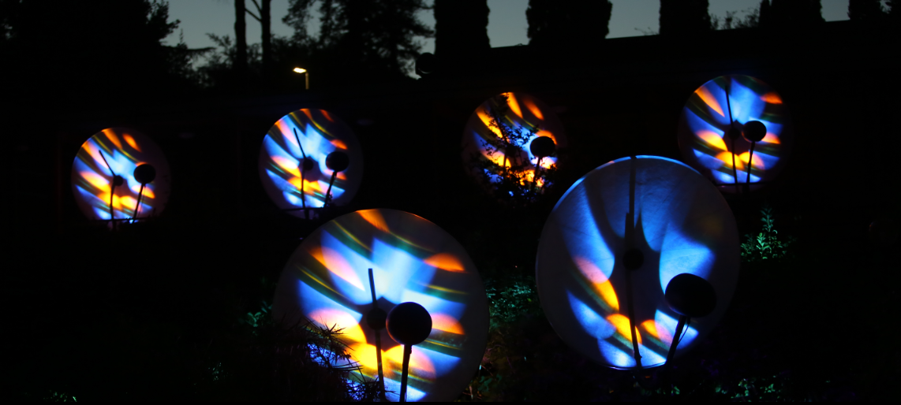

L'Aquila – chiostro S. Domenico – 03/2013
Site-specific sound installation exploring acoustic reflections and cavity resonances within the cloister architecture of San Domenico in L'Aquila. Audio installation for a multi-channel sound diffusion system
Sound direction: Luciano Ciamarone
Spatial composition and sound diffusion: Luciano Ciamarone

Located at the Parco degli Acquedotti in Rome, this immersive installation explores the relationship between acoustic space, memory, and wave behavior through the interaction of environmental impulse responses and generative electronic sound textures.